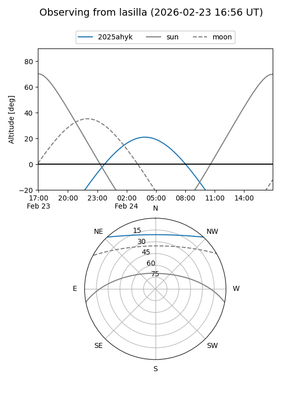
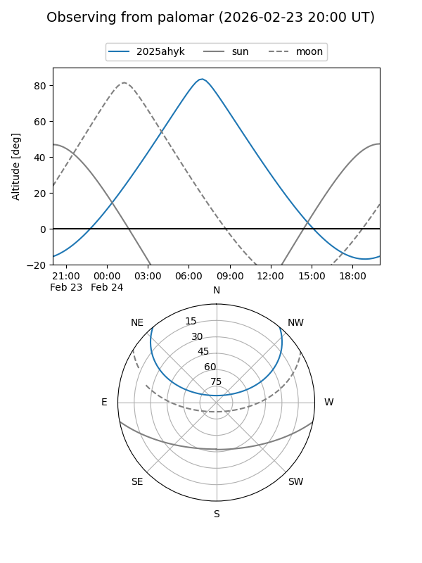

2025ahyk
Target 2025ahyk at 2025-12-31 17:00
Aliases and brokers:
FINK:
Lasair:
ALeRCE:
TNS:
YSE:
alt names
ZTF25acjoguh (ztf,fink_ztf)
2025ahyk (tns,yse)
ATLAS25qhe (atlas)
Coordinates:
equatorial (ra, dec) = 141.1809,+39.83720
equatorial (HMS+DMS) = 09:24:43.41,+39:50:13.93
galactic (l, b) = (182.5614,+45.71372)
Flags:
Photometry:
last ztfg=19.98
1 ztfg detections
Lightcurve

Visibility


Additional plots